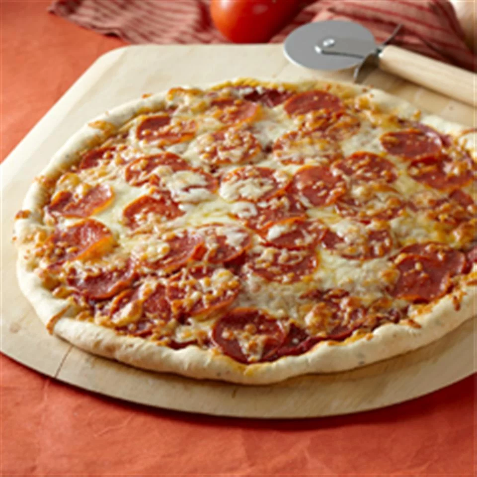

Pepperoni Pizza

Description
Create a delicious homemade pizza with minimal effort! Perfect for those late-running days where you
get home from work and want to cook something quick and simple without sacrificing taste!
This recipe makes a basic red pizza topped with mozzarella, pepperoni, and any extra toppings of your
choice, if desired. Serving size is 2 12" pizzas. If you're not that hungry, halve the recipe to make
just 1 pizza.
Ingredients
Sauce:
- 12oz tomato paste
- 1 tsp dried oregano, crushed
- 1 tsp dried basil, crushed
- 1/2tsp garlic powder
- 1/2tsp onion powder
- 1/2tsp sugar
- 1/2tsp salt
- 1/4tsp black pepper
Crust:
- 3 1/4 cups all-purpose floud
- .5oz yeast
- 1tbsp sugar
- 1 1/2 tsp salt
- 1 1/3 cups very warm water (120F - 130F)
- 1/3 cup oil
Toppings:
- 6oz pepperoni
- 1 cup shredded mozzarella
- Any additional toppings you want!
Steps
- Combine sauce ingredients + 1/2 cup water in a bowl
- Combine 2 cups flour with the yeast, sugar, & salt. Slowly add flour until soft dough ball can be formed
- Knead 4 minutes on floured surface. Knead longer if needed
- Divide dough in half. Pat each half into a 12-inch greased pan
- Preheat oven 425F. Dress crusts with sauce, moz, & pepperoni (and any additional toppings you want)
- Bake 18-20 minutes, until crusts are browned and cheese is bubbly